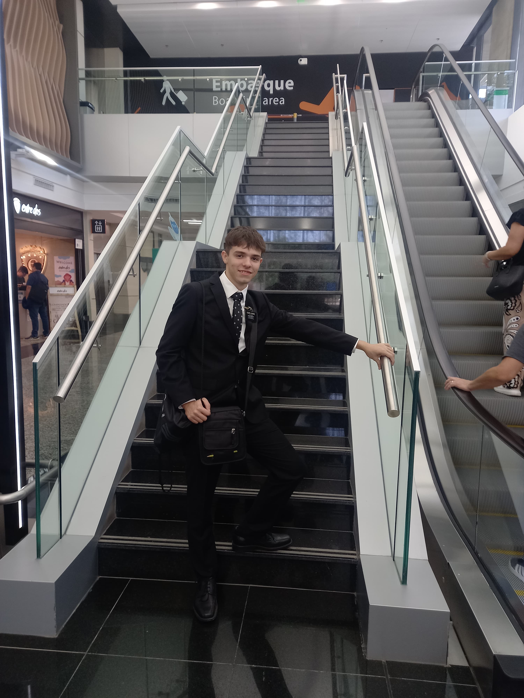

Nombre: Marcos Alvarez
Alias: "El Español"
Delitos: Disturbios en su escuela y mal comportamiento dentro de las fuentes del parque
Estado: Haciendo su misión en Mexico
Detalles
- Edad: 19
- Altura: 1.78 m
- Peso: -
- Instagram: marcosxaz
- Descripción: Es un gran pibe, todos a su alrededor lo aman, es un gran amigo y hermano de corazon, amante de la musica y gran soñador, correcto dentro de su fe y religion, responsable y fiel, actualmente esta desconectado debido a una mision religiosa en mexico, volvera en 2027.
- Testimonio: "-"